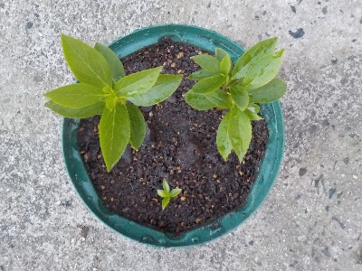
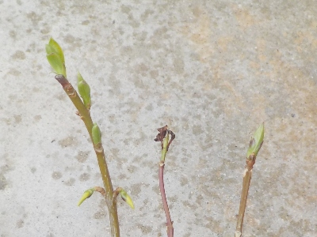
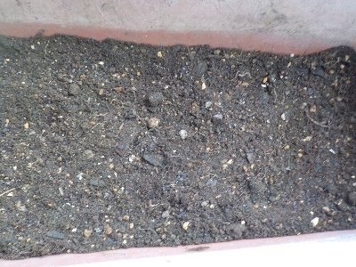
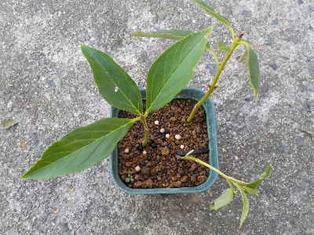
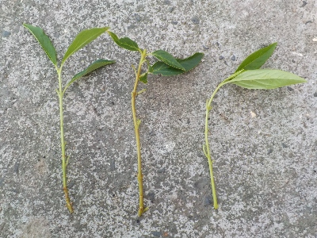
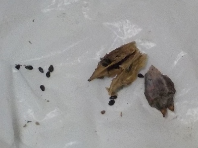

キキョウが順調に育っているので植え替えしました。
2025/04/13

1本は小さいですが2本は大きくなってます。
花が咲くのが楽しみです。何月になったら咲くのかな？
2025/04/13

1本は小さいですが2本は大きくなってます。
花が咲くのが楽しみです。何月になったら咲くのかな？
2025/03/16

地面からではなく茎から芽がでたので、茎が枯れていなかったようです。
軒下に置いていたので寒さに耐えたんでしょうね。タネを蒔いたばっかりですが、挿し芽の方が簡単に育つ感じがします。
2025/03/16

去年沢山タネを採取したので、プランターにパラパラとタネを蒔きました。
たぶん沢山芽が出るんじゃないかな。
2024/11/04

根っこは出ているので挿し芽は成功していますが、葉っぱの数は増えていないです。
寒くなって成長が止まったかもしれないです。日が多く当たる場所に移動して様子を見ようと思います
2024/09/28

タネを採ったばっかりですが、挿し芽がやりたくなりました。
キキョウの挿し芽時期は初夏らへんみたいですが、秋でもできるんじゃないかとやってみました。
下の方の脇芽で、たぶん花がつかなそうなを３本選びました。
寒くなって枯れる前に球根ができるかな？
2024/09/27

自宅のキキョウからタネを採りました。花一つ分に大量にタネが入っていました。
今日は花5個分を収穫したので、種蒔き分のタネはもう採る必要はなさそうです。
鉢植えで育てたいです。